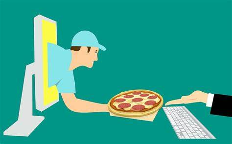

About FoodStore
At üçîFOODEXPRESS, we‚Äôre redefining the way you experience food delivery.
Founded with the goal of bringing delicious meals from your favorite local restaurants straight to your
doorstep,we make it easy to enjoy a wide variety of cuisines without leaving the comfort of your home.
Whether you’re craving a quick lunch, planning a family dinner, or hosting a special event, our user-friendly
platform connects you with a diverse selection of eateries, ensuring there’s something for
everyone.With a commitment to speed, quality, and customer satisfaction, FOODEXPRESS ensures that your food
arrives fresh,hot, and on time.We’re passionate about supporting local businesses and offering our customers
a seamless, reliable, and enjoyable dining experience at the click of a button.Join us in savoring the convenience
of great food, delivered.

What We Do ?
At FOODEXPRESS, we make it effortless for you to enjoy your favorite meals from the best local restaurants,
all from the comfort of your home. Our platform brings together a diverse range of eateries,
offering everything from gourmet dishes to comfort food, ensuring that you always have access
to the flavors you love. With just a few clicks, you can browse menus, customize your order,
and track your delivery in real-time. We partner with trusted local restaurants to provide
high-quality meals, ensuring that every order is prepared with care and delivered with speed.
Whether you're planning a cozy night in, hosting a virtual gathering, or simply looking for
a quick meal, FOODEXPRESS] is here to connect you with great food, fast. We are committed
to making your dining experience seamless, convenient, and satisfying every time..
Our Vision
To shop while being in the comfort of your own home, without having to step out of the door.
Provide home delivery free of cost.
No wait to see the products if someone else are taking that.